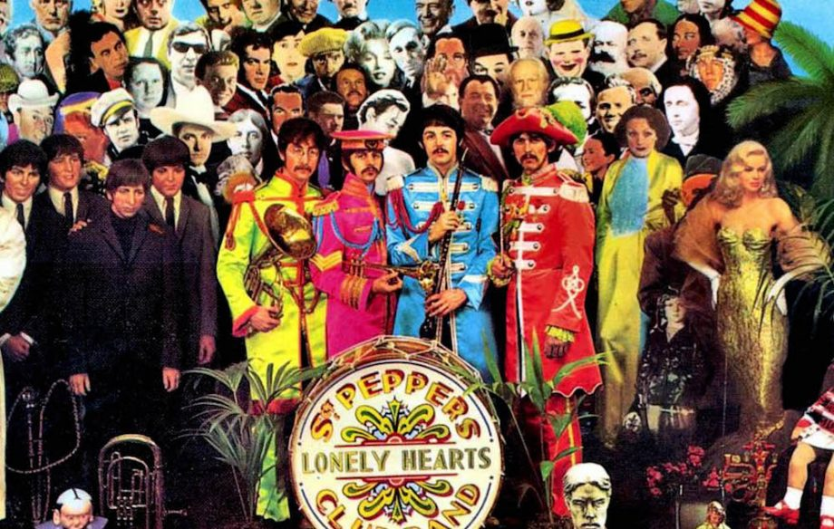
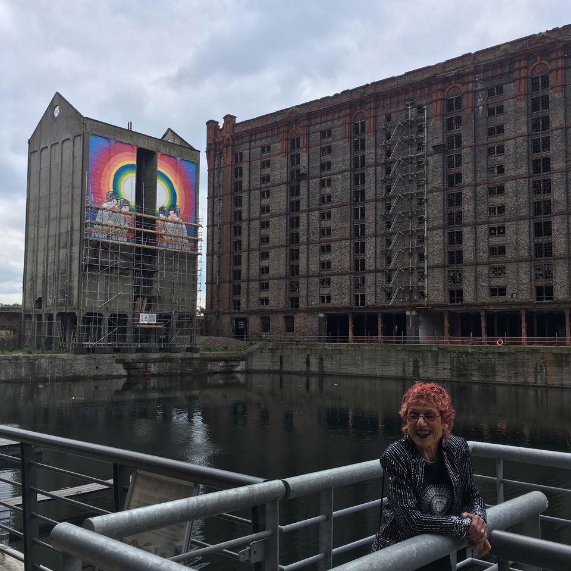
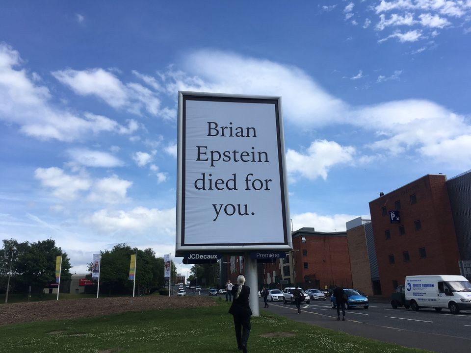

Liverpool celebrates The Beatles’ Sgt Pepper album with a little help from artist friends
by JOSÉ DA SILVA |
Among the 13 new commissions, Judy Chicago has designed a giant psychedelic mural while Jeremy Deller has produced a series of billboards and a secret performance.

The Beatles ‘Sgt. Pepper's Lonely Hearts Club Band’ album cover
For the 50th anniversary of The Beatles’s Sgt Pepper’s Lonely Hearts Club Band album, the city of Liverpool has commissioned 13 new works, including public art, concerts, theatre and dance performances — each inspired by a song from the album. Among the pieces unveiled in the city on Thursday, 1 June are a 12-metre-high psychedelic mural by the US artist Judy Chicago, a series of public billboards by the British artist Jeremy Deller.
Chicago says that although she was never a particularly big Beatles fan —
I’m not the groupie type. I was in my studio
— they represented
hope and change
to her. She was assigned the song Fixing a Hole
as the starting point for her commission and after researching the various
theories of the song’s meaning, from drug use to a hole in Paul McCartney’s
new roof, she alighted on the idea of fixing a hole in history — who gets
to participate in it
. As an artist who has fought over much of her career
to highlight the role of women in art history, Chicago says she related to that
.

Judy Chicago, with her mural Four Lads from Liverpool (2017), executed by sign painter Gary Jones
The mural, titled Four Lads from Liverpool (2017), was still being completed
today on the side of an old grain silo at the edge of one of the city’s former docks.
Standing outside the hotel she is staying at across the water and using a
telephoto lens, Chicago gave instructions to Gary Jones, a former sign painter,
via mobile telephone: The shading on the head of Ringo looks really good!
Chicago says that people have been surprised she didn’t have a team of workers
make the mural but she counters that by collaborating with one person—and naming
him in the press material — it emphasises, in an era of big studios of nameless
assistants, the individual’s voice
.
Meanwhile, Jeremy Deller has produced a series of signs and billboards in
prominent locations around Liverpool declaring: Brian Epstein died for you.
Our debt to him is huge
, Deller says of Epstein, who discovered
The Beatles and became their manager, as well as a close friend. I grew up
with the band, and I’m mildly obsessed with [Epstein]
, Deller adds.

Jeremy Deller has produced a series of signs and billboards in prominent locations around Liverpool declaring: “Brian Epstein died for you”
The public works come on the back of the Deller’s recent Strong and Stable My Arse
fly-posters that sprung up around London last month, mocking the British
Prime Minister Theresa May’s campaign slogan. Deller says he plans to use
the medium again in the future as it is very effective—its good [for people]
to see something real
, as opposed to online.
The song assigned to Deller was "With a Little Help from My Friends", and
a further performance piece inspired by it, will take place on Friday.
The work is a closely guarded secret, with Deller only revealing that
there will be things happening in the city
.
The Sgt Pepper at 50 commissions are funded by the Art Council England and supported by Liverpool City Council.